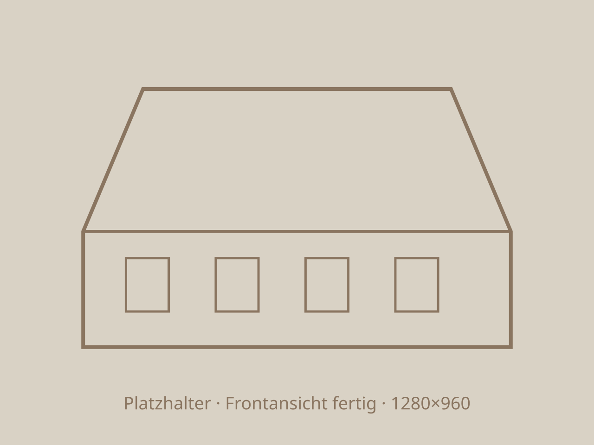

Leistung
Umbauen und Sanieren
Wir erhalten, was trägt, und ersetzen, was nicht mehr zu retten ist. Am liebsten mit dem Holz, das schon im Haus war.

Leitprojekt
Hochstudhaus, Totalsanierung
Ein Projekt zeigt die ganze Leistung. Alle Bilder dieser Seite stammen von diesem Haus.
- Objekt
- Bauernhaus, ca. 1860
- Bauzeit
- 2 Jahre
- Massivholz
- 85 m³


Umbau oder Sanierung geplant?
Schicken Sie uns Fotos und eine kurze Beschreibung. Wir melden uns mit einer ersten Einschätzung.